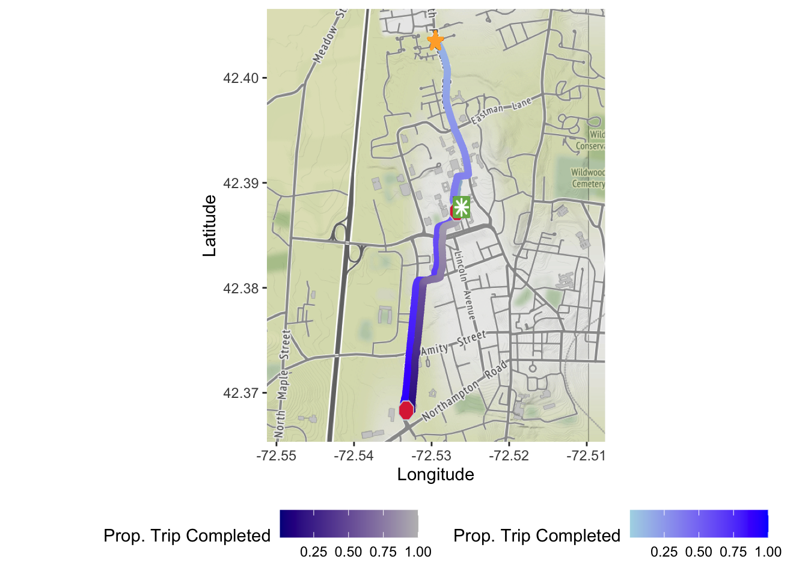
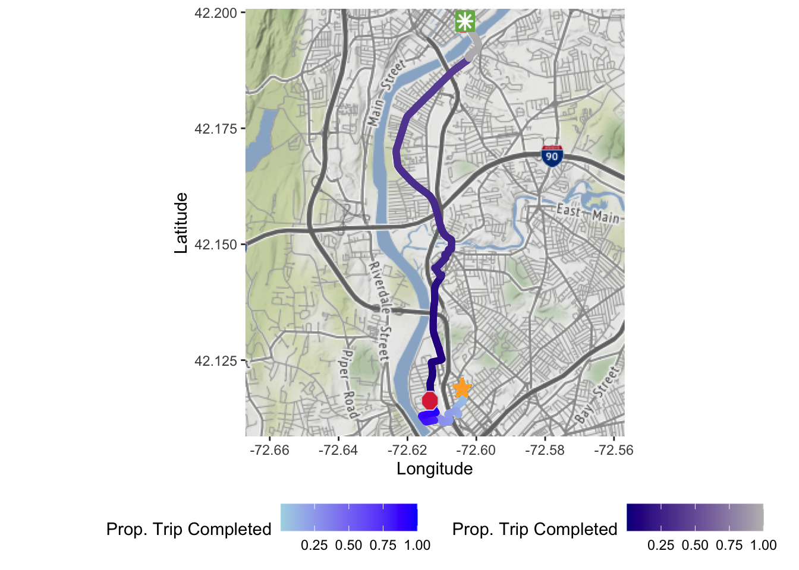
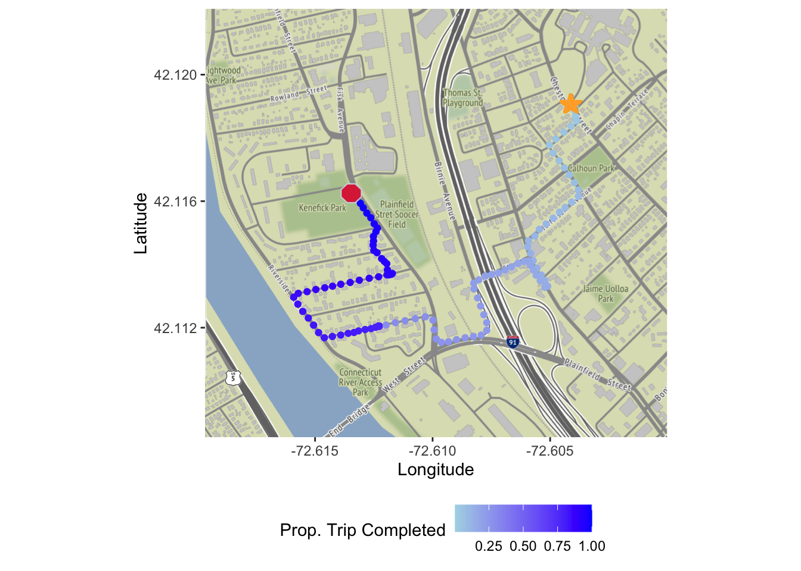
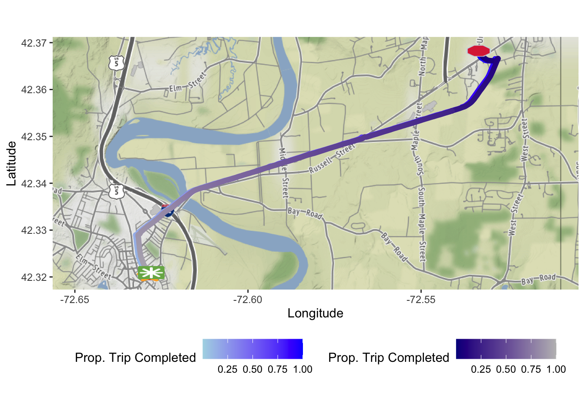
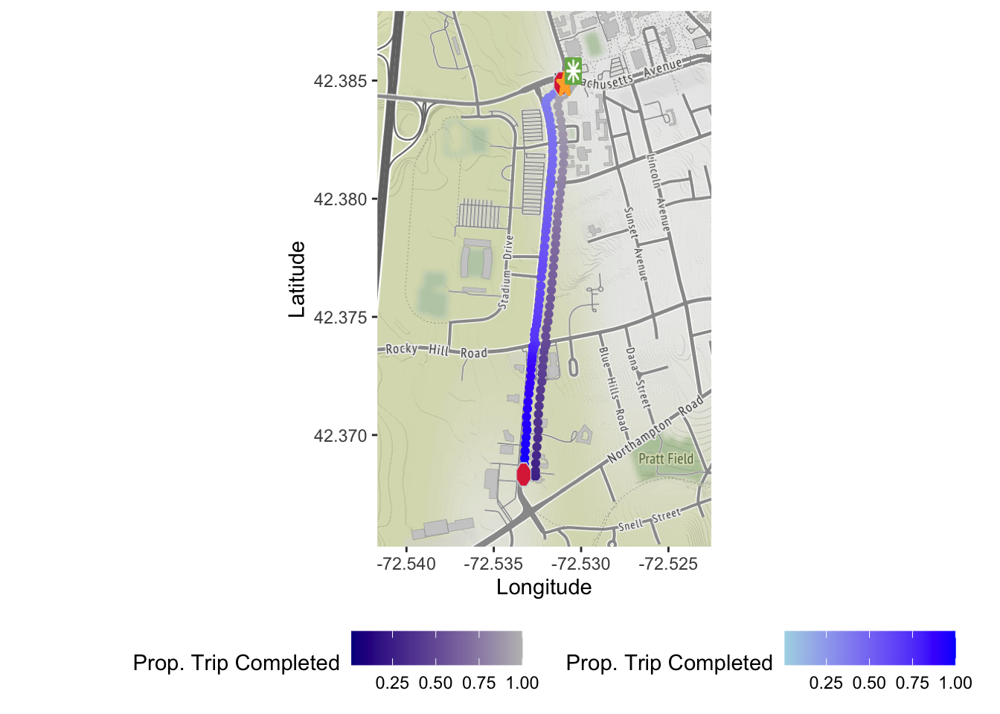
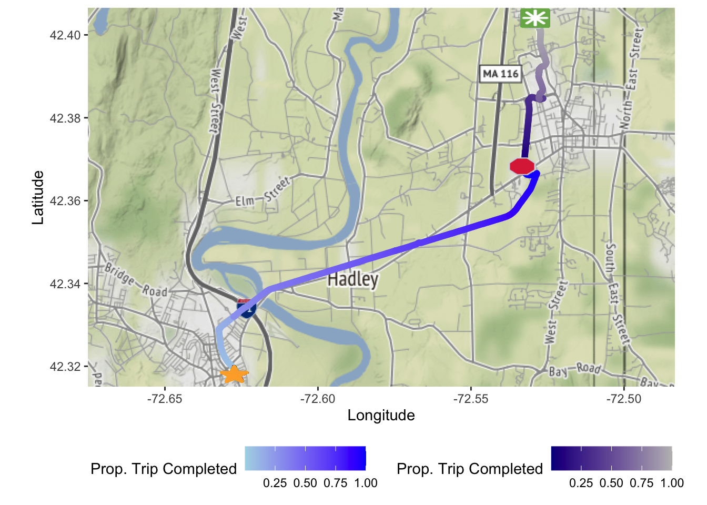
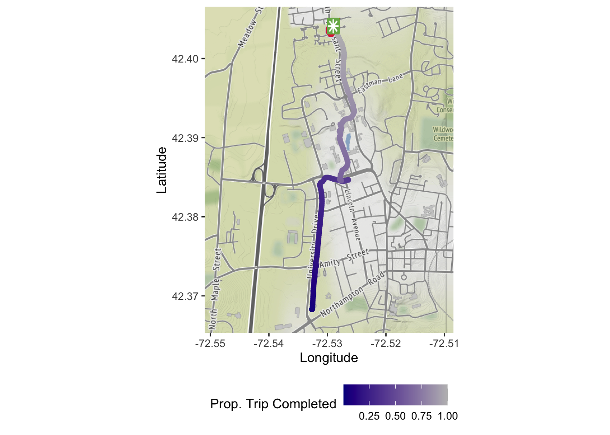

9 Secondary Stops
9.1 Secondary Stops
One other key question we wanted to focus on was identifying and focusing on secondary stops, or those that start a ride at a certain station, stopped the bike somewhere that wasn’t a station, and then started up a ride with the same bike shortly after continuing on in their route. The insights gained from looking into these types of rides could give especially helpful information on where to potentially put in new stations, since we would be identifying locations where people are stopping their rides frequently.
After identifying the 5 rides that had secondary stops in the middle of the rides, we then focused on visualizing the rides themselves and where the stops took place. This involved for each of the separate rides, plotting an icon where each of the stops took place as well as where the starting and stop stations are. This also involved plotting the two separate trips, the part before the stop and the part after the stop, on a map to identify exactly where the routes themselves go. This can allow one to identify exactly where the stop took place and this can lead to future work where we look into more rides to identify where a lot of these secondary stops are taking place, in order to potentially identify locations for future stations to be put in.
One of the last parts of for this task involved building a table thats connected to the rides themselves. Since it sometimes can be hard to identify where exactly the starting and ending locations of the trips themselves, by pairing this with the information provided by the table, we can start to look identify not only where the routes themselves went, but can look into how long the user stopped for and how longs the total trip was. All this information can be used to paint a more complete picture of the rides themselves and be able to gain insights on who the type of rider might be any why they might be stopping in the location they end up stopping in.
get_base_map <- function(zoom, dataset) {
if (!has_google_key()) {
stop("Please provide a valid Google API key.")
}
sides <- diff(range(dataset$latitude)) / 2
boundary <- c(
min(dataset$longitude - sides, na.rm = T),
min(dataset$latitude - 0.003, na.rm = T),
max(dataset$longitude + sides, na.rm = T),
max(dataset$latitude + 0.003, na.rm = T)
)
base_map <- get_map(location = boundary, zoom = zoom, source = "google")
return(base_map)
}plot_stop_emoji <- function(dataset) {
p1 <- geom_emoji(data = dataset,aes(longitude, latitude), emoji = "1f6d1", size = 0.05)
return(p1)
}
plot_start_station_emoji <- function(dataset) {
data <- dataset %>%
select(start_station, route_id) %>%
drop_na(start_station) %>%
mutate(name = start_station) %>%
left_join(stations, by = "name")
p2 <- geom_emoji(data = data, aes(longitude, latitude), emoji = "2b50", size = 0.05)
return(p2)
}
plot_end_station_emoji <- function(dataset) {
data <- dataset %>%
select(end_station, route_id) %>%
drop_na(end_station) %>%
mutate(name = end_station) %>%
left_join(stations, by = "name")
p3 <- geom_emoji(data = data, aes(longitude + 0.0005, latitude + 0.0005), emoji = "2733",
size = 0.05)
return(p3)
}plot_stops <- function(starting_station, stop_station, api_key, zoom = "auto", location, dataset) {
register_google(api_key)
base_map <- get_base_map(zoom = zoom, dataset = dataset)
start_route <- dataset %>%
filter(!is.na(start_station))
end_route <- dataset %>%
filter(!is.na(end_station))
p1 <- plot_start_station_emoji(dataset)
p2 <- plot_end_station_emoji(dataset)
route_map <- ggmap(base_map) +
geom_point(aes(x = longitude, y = latitude, color = prop_trip_completed), data = start_route) +
scale_color_gradient(low = "lightblue", high = "blue") +
labs(color = "Prop. Trip Completed") +
new_scale_color() +
geom_point(aes(x = longitude + 0.0007, y = latitude, color = prop_trip_completed),
data = end_route) +
scale_color_gradient(low = "darkblue", high = "gray") +
labs(x = "Longitude", y = "Latitude", color = "Prop. Trip Completed") +
theme(legend.position = "bottom")
stops <- subset(dataset, stop == "Yes")
if (nrow(stops) > 0) {
p3 <- plot_stop_emoji(dataset = stops)
route_map <- route_map + p3 + p1 + p2
route_map
} else {
route_map + p1 + p2
}
}get_table_data <- function(dataset = NULL) {
start_table <- dataset %>%
ungroup() %>%
select(start_station) %>%
filter(!is.na(start_station)) %>%
unique()
end_table <- dataset %>%
ungroup() %>%
select(end_station) %>%
filter(!is.na(end_station)) %>%
unique()
table1 <- dataset %>%
mutate(end_times = max(time), start_times = min(time), total_times = end_times - start_times) %>%
select(start_times, end_times, total_times) %>%
unique() %>%
arrange(start_times)
table2 <- table1 %>%
ungroup() %>%
mutate(
start_time = start_times[1],
end_time = end_times[2],
total_trip_time = end_time - start_time,
stop_duration = start_times[2] - end_times[1]
) %>%
select(start_time,end_time, total_trip_time, stop_duration) %>%
unique()
table2$total_trip_time <- round(table2$total_trip_time, 2)
table2$stop_duration <- round(table2$stop_duration, 2)
combined_tables <- cbind(start_table, end_table, table2)
combined_tables <- combined_tables %>%
kable(booktabs = TRUE, col.names = c("Start Station", "End Station", "Start Time",
"End Time", "Trip Duration", "Stop Duration")) %>%
kable_styling(latex_options = c("HOLD_position"), font_size = 8)
return(combined_tables)
}9.1.1 User 1 (Trips 12-13)
user_1 <- stops %>%
select(start_station, end_station, route_id, user_id) %>%
filter(route_id == "route_08_2020@cb1c957a-a5b9-493a-b327-b7f2cfa66a0e" |
route_id == "route_08_2020@79b103d7-e94a-4a06-b32c-1d5fb3fb7967") %>%
left_join(august2020, route_id = route_id) %>%
group_by(route_id) %>%
mutate(
row = row_number(),
num_rows = max(row),
prop_trip_completed = row / num_rows
) %>%
arrange(route_id, prop_trip_completed)
user_1$stop <- "No"
user_1$stop[118] <- "Yes"
user_1$stop[361] <- "Yes"
user_1_part_1 <- filter(user_1, route_id == "route_08_2020@cb1c957a-a5b9-493a-b327-b7f2cfa66a0e")
user_1_part_2 <- filter(user_1, route_id == "route_08_2020@79b103d7-e94a-4a06-b32c-1d5fb3fb7967")
get_table_data(dataset = user_1)| Start Station | End Station | Start Time | End Time | Trip Duration | Stop Duration |
|---|---|---|---|---|---|
| North Pleasant Street | UMass Haigis Mall | 2020-08-11 22:56:44 | 2020-08-12 00:05:14 | 1.14 hours | 38.58 mins |

9.1.2 User 2 (Trips 26-27)
user_2 <- stops %>%
select(start_station, end_station, route_id, user_id) %>%
filter(route_id == "route_06_2019@d019efa8-b176-41eb-a8c3-79f6862d8877" |
route_id == "route_06_2019@b543b889-9973-4240-9e6c-dd28784f4915") %>%
left_join(june2019, route_id = route_id) %>%
group_by(route_id) %>%
mutate(
row = row_number(),
num_rows = max(row),
prop_trip_completed = row / num_rows
) %>%
arrange(route_id, prop_trip_completed)
user_2$stop <- "No"
user_2$stop[1276] <- "Yes"
user_2$stop[1511] <- "Yes"
user_2_part_1 <- filter(user_2, route_id == "route_06_2019@d019efa8-b176-41eb-a8c3-79f6862d8877")
user_2_part_2 <- filter(user_2, route_id == "route_06_2019@b543b889-9973-4240-9e6c-dd28784f4915")
get_table_data(dataset = user_2)| Start Station | End Station | Start Time | End Time | Trip Duration | Stop Duration |
|---|---|---|---|---|---|
| Baystate Health/Chestnut Street | South Holyoke | 2019-06-08 21:57:40 | 2019-06-09 00:04:20 | 2.11 hours | 55 secs |


9.1.3 User 3 (Trips 41-42)
user_3 <- stops %>%
select(start_station, end_station, route_id, user_id) %>%
filter(route_id == "route_05_2019@2f6fef2d-632e-41db-913d-51a195bfb8c1" |
route_id == "route_05_2019@46e30988-fe99-4959-9c25-fad252667539") %>%
left_join(may2019, route_id = route_id) %>%
group_by(route_id) %>%
mutate(
row = row_number(),
num_rows = max(row),
prop_trip_completed = row / num_rows
) %>%
arrange(route_id, prop_trip_completed)
user_3$stop <- "No"
user_3$stop[649] <- "Yes"
user_3$stop[1128] <- "Yes"
user_3_part_1 <- filter(user_3, route_id == "route_05_2019@2f6fef2d-632e-41db-913d-51a195bfb8c1")
user_3_part_2 <- filter(user_3, route_id == "route_05_2019@46e30988-fe99-4959-9c25-fad252667539")
get_table_data(dataset = user_3)| Start Station | End Station | Start Time | End Time | Trip Duration | Stop Duration |
|---|---|---|---|---|---|
| Main Street/Bridge Street | Main Street/Bridge Street | 2019-05-25 21:47:58 | 2019-05-25 23:48:18 | 2.01 hours | 26.5 mins |

9.1.4 User 4 (Trips 52-53)
user_4 <- stops %>%
select(start_station, end_station, route_id, user_id) %>%
filter(route_id == "route_07_2019@acfb26e9-9d3e-40bf-b219-21a1399016b0" |
route_id == "route_07_2019@0f0457cc-c4c8-4939-a509-f1e93f5b867e") %>%
left_join(july2019, route_id = route_id) %>%
group_by(route_id) %>%
mutate(
row = row_number(),
num_rows = max(row),
prop_trip_completed = row / num_rows
) %>%
arrange(route_id, prop_trip_completed)
user_4$stop <- "No"
user_4$stop[75] <- "Yes"
user_4$stop[191] <- "Yes"
user_4_part_1 <- filter(user_4, route_id == "route_07_2019@acfb26e9-9d3e-40bf-b219-21a1399016b0")
user_4_part_2 <- filter(user_4, route_id == "route_07_2019@0f0457cc-c4c8-4939-a509-f1e93f5b867e")
get_table_data(dataset = user_4)| Start Station | End Station | Start Time | End Time | Trip Duration | Stop Duration |
|---|---|---|---|---|---|
| UMass Southwest | UMass Southwest | 2019-07-30 01:06:39 | 2019-07-30 03:20:24 | 2.23 hours | 1.97 hours |

9.1.5 User 5 (Trips 88-89)
user_5 <- stops %>%
select(start_station, end_station, route_id, user_id) %>%
filter(route_id == "route_09_2019@4c3978dd-48ec-4ca7-9af2-e08518e66b7c" |
route_id == "route_09_2019@91e61182-d511-4a4e-bbe1-86acb8e08483") %>%
left_join(september2019, route_id = route_id) %>%
group_by(route_id) %>%
mutate(
row = row_number(),
num_rows = max(row),
prop_trip_completed = row / num_rows
) %>%
arrange(route_id, prop_trip_completed)
user_5$stop <- "No"
user_5$stop[511] <- "Yes"
user_5$stop[763] <- "Yes"
user_5_part_1 <- filter(user_5, route_id == "route_09_2019@4c3978dd-48ec-4ca7-9af2-e08518e66b7c")
user_5_part_2 <- filter(user_5, route_id == "route_09_2019@91e61182-d511-4a4e-bbe1-86acb8e08483")
get_table_data(dataset = user_5)| Start Station | End Station | Start Time | End Time | Trip Duration | Stop Duration |
|---|---|---|---|---|---|
| Northampton Train Station | North Pleasant Street | 2019-09-18 18:09:10 | 2019-09-18 19:13:25 | 1.07 hours | 50 secs |

#plot_stops(api_key = key, zoom = 14, dataset = user_5_part_1)
plot_stops(api_key = key, zoom = 14, dataset = user_5_part_2)
9.2 All Secondary Stops
9.2.1 Static Visualization of All Stops
center <- c(lon = (max(stops$longitude) + min(stops$longitude)) / 2,
lat = (max(stops$latitude) + min(stops$latitude)) / 2)
map <- get_map(location = center, zoom = 11)
ggmap(map, base_layer = ggplot(stops, aes(x = longitude, y = latitude))) +
geom_point(size = 4, alpha = 0.7, color = "red", shape = 18) +
labs(x = "Longitude", y = "Latitude")
9.2.2 Static Visualization of Stops by City
cities <- c("Springfield", "Northampton", "Holyoke", "Amherst", "South Hadley", "Easthampton")
city_plots <- lapply(cities, function(city) {
city_center <- geocode(paste0(city, ", MA"))
stops <- stops %>%
rowwise() %>%
filter(geosphere::distVincentyEllipsoid(c(city_center$lon, city_center$lat), c(longitude, latitude)) <= 3000)
map_center <- c(lon = (max(stops$longitude) + min(stops$longitude)) / 2,
lat = (max(stops$latitude) + min(stops$latitude)) / 2)
map <- get_map(location = map_center, zoom = 13)
ggmap(map, base_layer = ggplot(stops, aes(x = longitude, y = latitude))) +
geom_point(size = 3, alpha = 0.7, color = "red", shape = 18) +
labs(x = "Longitude", y = "Latitude", title = paste("Stops in", city))
})
cowplot::plot_grid(plotlist = city_plots, ncol = 2)